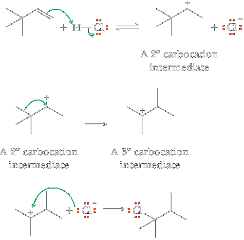

Carbocation Rearrangements
As we have seen in the preceding discussions, the expected product of electrophilic addition to a carbon-carbon double bond involves rupture of the π bond and formation of two new s bonds in its place. In addition of HCl to 3,3-dimethyl-1-butene, however, only 17% of 2-chloro-3,3-dimethylbutane, the expected product, is formed. The major product is 2-chloro-2,3-dimethylbutane, a compound with a different connectivity of its atoms compared with that in the starting alkene. We say that formation of 2-chloro-2,3-dimethylbutane involves a rearrangement. Typically, either an alkyl group or a hydrogen migrates, each with its bonding electrons, from an adjacent atom to the electron-defi cient atom. In the rearrangements we examine in this chapter, migration is to an adjacent electron-deficient carbon atom bearing a positive charge.
The driving force for this rearrangement is the fact that the less stable 2° carbocation is converted to a more stable 3° carbocation. From the study of this and other carbocation rearrangements, we find that 2° carbocations rearrange to more stable 2° or 3° carbocations. They rearrange in the opposite direction only under special circumstances such as where the relief of ring strain provides added driving force. Rearrangements also occur in the acid-catalyzed hydration of alkenes, especially when the carbocation formed in the first step can rearrange to a more stable carbocation. For example, acid-catalyzed hydration of 3-methyl-1-butene gives 2-methyl-2-butanol. In this example, the group that migrates is a hydrogen with its bonding pair of electrons, in effect a hydride ion H:−.
| 3-Methyl-1-butene | + | H2O | H2SO4 ⟶ |
2-Methyl-2-butanol |